San Hilarión
Aaron Sixto Callupe Llallico
Personal Social
4to de Primaria (9 años - etapa de operaciones concretas)
30 minutos
Convive y participa democráticamente en la búsqueda del bien común.
- Interactúa con todas las personas.
- Construye normas y asume acuerdos y leyes.
- Maneja conflictos de manera constructiva.
Participa en la elaboración de acuerdos de convivencia en el patio, escucha las propuestas de sus compañeros y explica la importancia de la participación de todos.
Enfoque de Derechos Enfoque de Igualdad de Género
Los estudiantes discuten constantemente por el uso de las canchas de fútbol durante el recreo, excluyendo a las niñas y a los niños más pequeños.
INICIO - Fase de Exploración
- Paso 1 (Mapeo Físico): Los estudiantes salen con hojas y colores. Dibujan un croquis rápido del patio escolar.
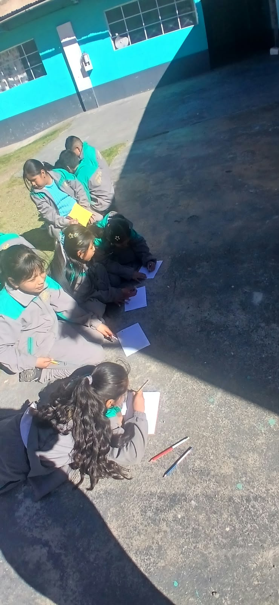
- Paso 2 (Identificación): Pintan de rojo las zonas que ocupan los que juegan fútbol, y de azul los espacios sobrantes para los demás.
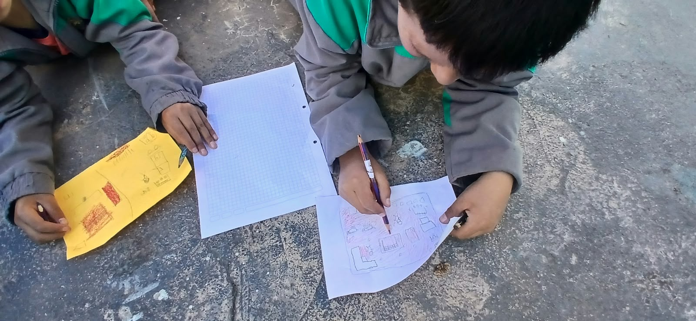
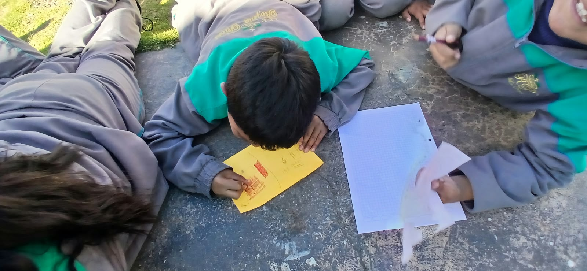
- Paso 3 (Andamiaje Docente): Aplicación de cuestionamiento socrático profundo: "¿Cómo sabes que esa distribución es justa?" y "¿Qué pasaría si todos quisiéramos usar el centro del patio al mismo tiempo?".
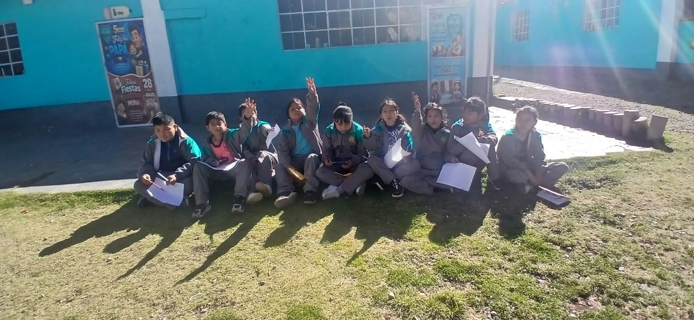
DESARROLLO - Fase de Empatía
- Paso 1 (Preparación): El docente delimita un espacio muy pequeño en el patio usando tizas o aros.
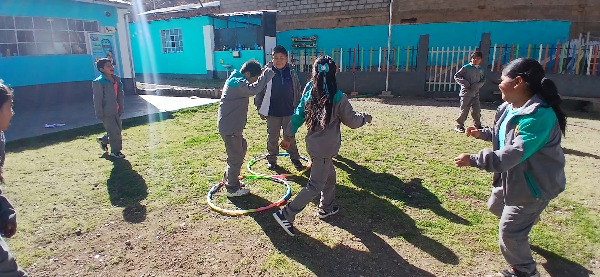
- Paso 2 (Roles Cruzados): Los niños que usualmente juegan fútbol asumen el rol de "los más pequeños que quieren correr", mientras que las niñas o niños pequeños toman el rol de "los futbolistas".
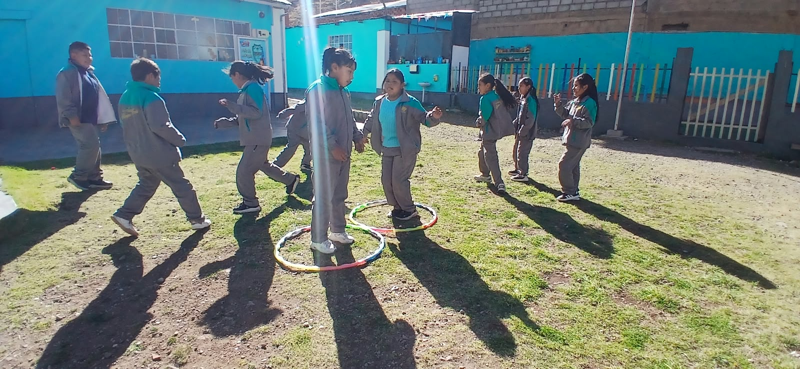
- Paso 3 (Experimentación): Intentan realizar sus actividades lúdicas simultáneamente dentro del espacio reducido.
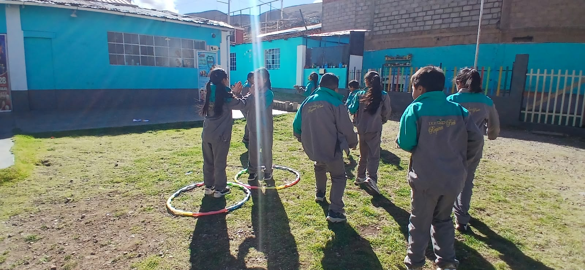
- Paso 4 (Metacognición): Tras chocar o frustrarse, se detiene el juego. Los estudiantes verbalizan cómo se sintieron en ese rol, asimilando la experiencia de exclusión.
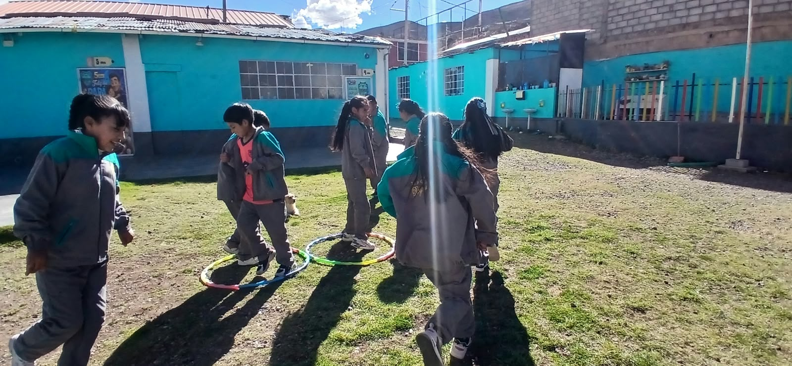
CIERRE - Fase de Resolución
- Paso 1 (Organización): Retorno al aula y formación de grupos cooperativos.
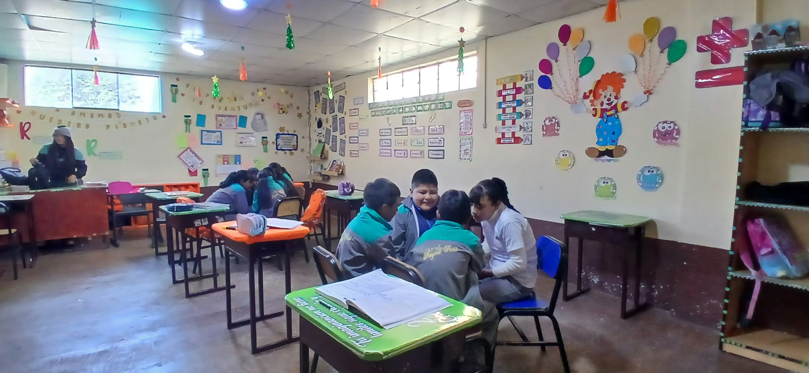
- Paso 2 (Roles de Grupo): Se asignan roles: un 'diseñador' (propone la idea), un 'crítico' (evalúa si es justa para todos) y un 'comunicador' (expone al aula).
- Paso 3 (Debate): Los estudiantes debaten y estructuran soluciones reales (ej. turnos por días, división equitativa, juegos integrados).
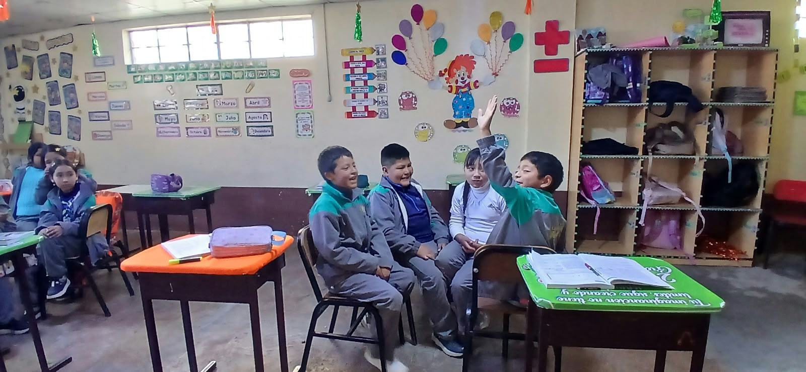
- Paso 4 (Producto Final): Redacción colectiva y fundamentada del 'Acuerdo de Convivencia del Patio'.
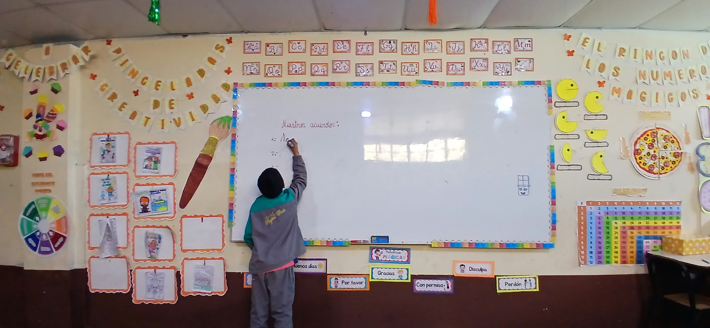
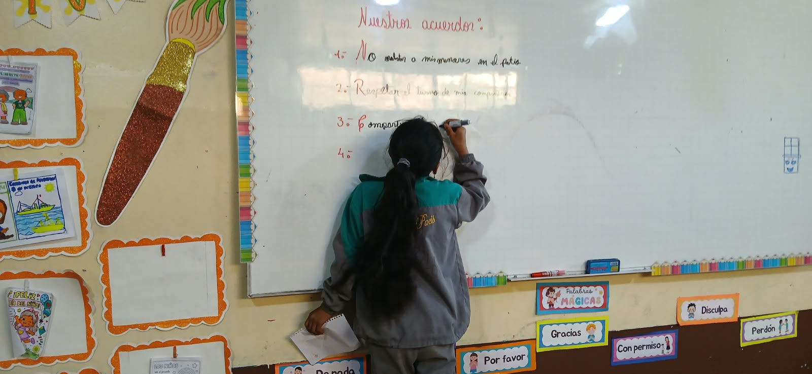
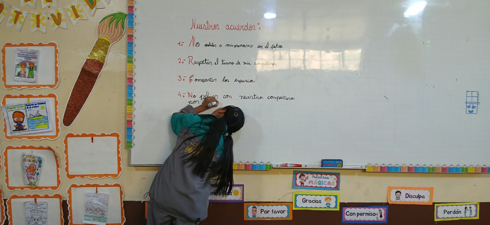
'Acuerdo de Convivencia del Patio' validado socialmente.
Lista de Cotejo.
Hojas bond, colores (rojo/azul), tizas/aros, papelotes, plumones.